Cuidado desde o primeiro contato. Acompanhamento da depressão no posto de saúde do SUS, entre uma consulta e outra.
Pedro Henrique Urio dos Santos · Raphael Soares de Almeida · Ruan Carlos da Silva · Vinicius Antonio Jaeger · Vitor Rafael Marcelino
resposta do pacientepiora ou risco
Parte 01 de 05
Visão geral, regras de negócio e arquitetura
PPedro apresenta
O que é?
Os três perfis entram com a conta gov.br. Não substitui o prontuário e deixa de fora agendamento, teleconsulta e receita.
Responde pelo WhatsApp, pelo site ou com o profissional.
Vê quem piorou ou parou de responder e encaminha.
Recebe o histórico e devolve uma orientação à unidade.
Regras de negócio
Na pergunta 9, qualquer resposta diferente de “nenhuma vez” mostra o CVV e marca o paciente como Risco.
Ponto de corte definido pela linha de cuidado.
Após 16 semanas sem queda de 5 pontos, ou com pensamentos de se ferir ao longo de 12 semanas.
Regras de negócio
14, 21 ou 28 dias. Padrão de 14, nunca menos.
Vê só as próprias respostas, sem pontuação.
Vê só os pacientes encaminhados a ele.
Cinco faixas e resposta ao tratamento após 4 semanas.
Risco, Piorou, Sem resposta, Sugere encaminhamento, Em dia.
No dia e 3 dias depois, sem dado de saúde.
Com motivo obrigatório, levando o histórico.
Novo, Visto e Respondido, com conduta obrigatória.
Arquitetura
Um site só para celular e computador, sem instalar.
API REST com as regras. Login pelo gov.br; no WhatsApp, pelo número.
Paciente, acompanhamento, respostas, encaminhamento e transferência.
Lê o cadastro que a unidade já tem
Lembrete e conversa do questionário
Parte 02 de 05
Motivação, dados de pesquisa e sistemas semelhantes
VVinicius apresenta
Motivação
10,2%
dos adultos relatam diagnóstico de depressão (2019). Em 2013, eram 7,6%.
52,8%
deles procuraram atendimento nos 12 meses anteriores.
Fonte: Pesquisa Nacional de Saúde 2013 e 2019 (Brito et al., 2022)
Evidência
chegaram à remissão
chegaram à remissão
Guo et al. (2015), 120 pacientes. Revisão de 51 artigos (Fortney et al., 2017) na mesma direção.
O problema
Se o paciente piora ou desiste, ninguém fica sabendo a tempo.
O psiquiatra não vê como os sintomas evoluíram.
Nenhum indicador federal da APS é de saúde mental.
Por isso: site leve e resposta registrada pelo profissional.
Sistemas semelhantes
Parte 03 de 05
O que cada perfil quer fazer, e como isso vira o diagrama
VVitor apresenta
Histórias de usuário
Sem ir ao posto nem gastar pacote de dados
Para lembrar o que contar na consulta
Busca ativa antes do abandono
Decidir, e não perguntar tudo de novo
Ninguém fica de fora
Sem montar o resumo à mão
Atender primeiro quem está mais grave
Nas férias, sem deixá-lo sem responsável
Sem depender de papel ou telefonema
Diagrama de casos de uso
Usuário › Paciente e Profissional de saúde › unidade e psiquiatra
Definir periodicidade e Gerar resumo do histórico
Alertar risco, quando a pergunta 9 ≠ “nenhuma vez”
Responder (WhatsApp, site) e Transferir
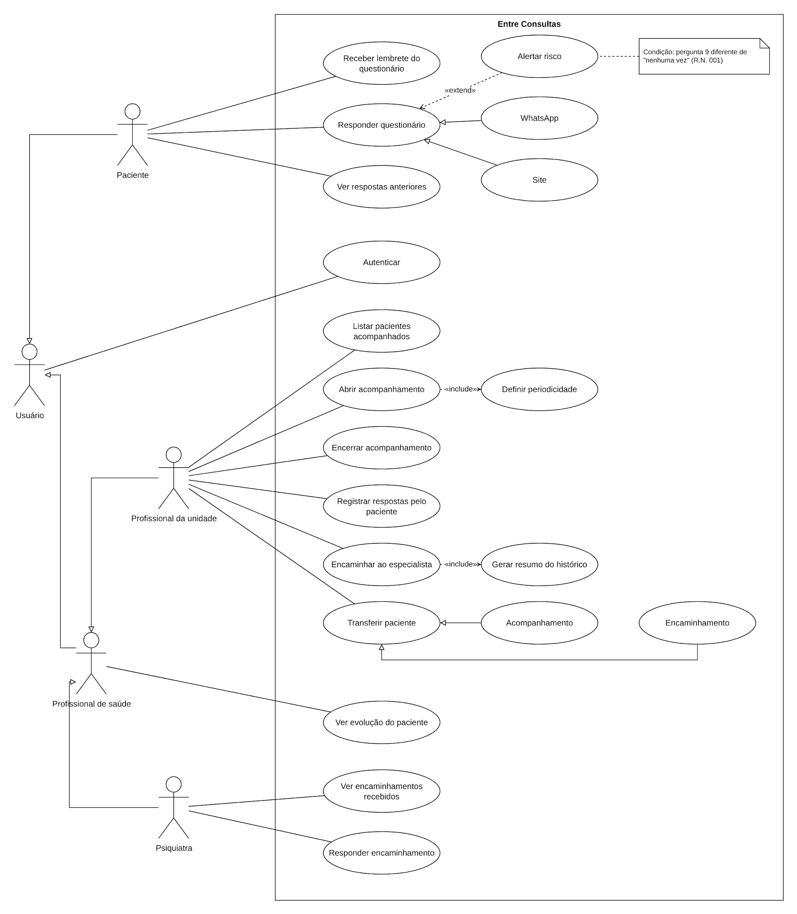
Parte 04 de 05
Navegável em React, com dados fictícios: entre-consultas-sigma.vercel.app
RRaphael apresenta
Paciente
As nove perguntas do PHQ-9 e o que está pesando no momento: trabalho, família, dinheiro.
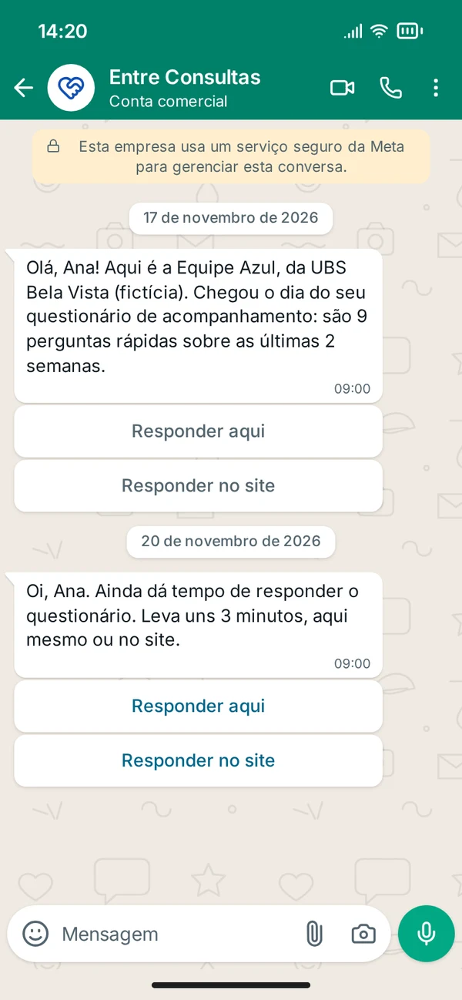
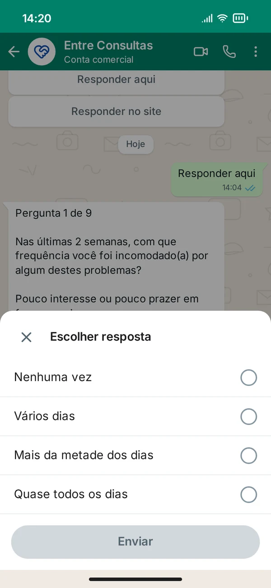
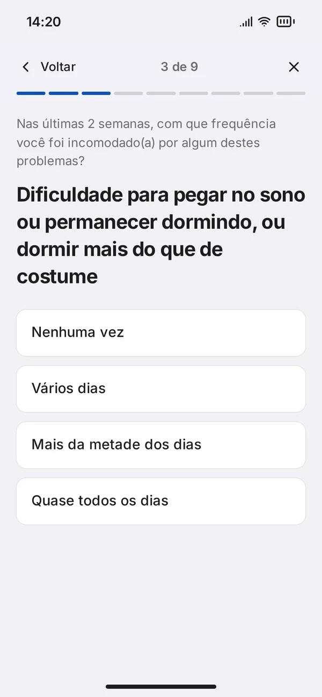
Segurança do paciente
O paciente fica marcado como Risco na lista da equipe. O sistema deixa claro que não acompanha em tempo real.
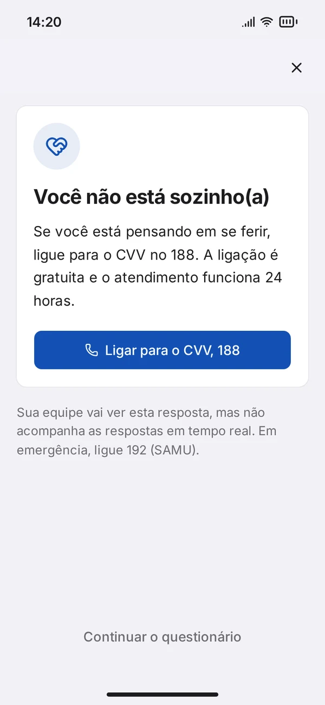
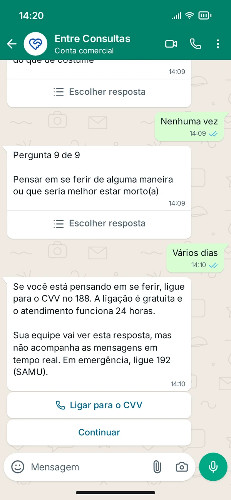
Profissional do posto
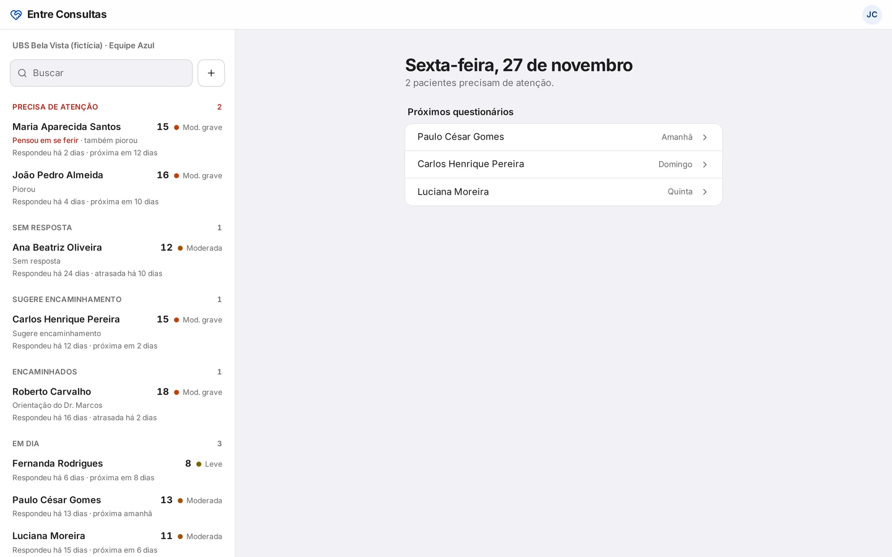
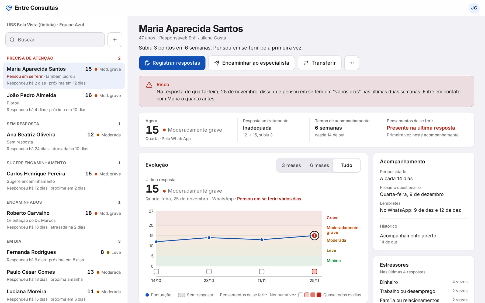
Profissional do posto
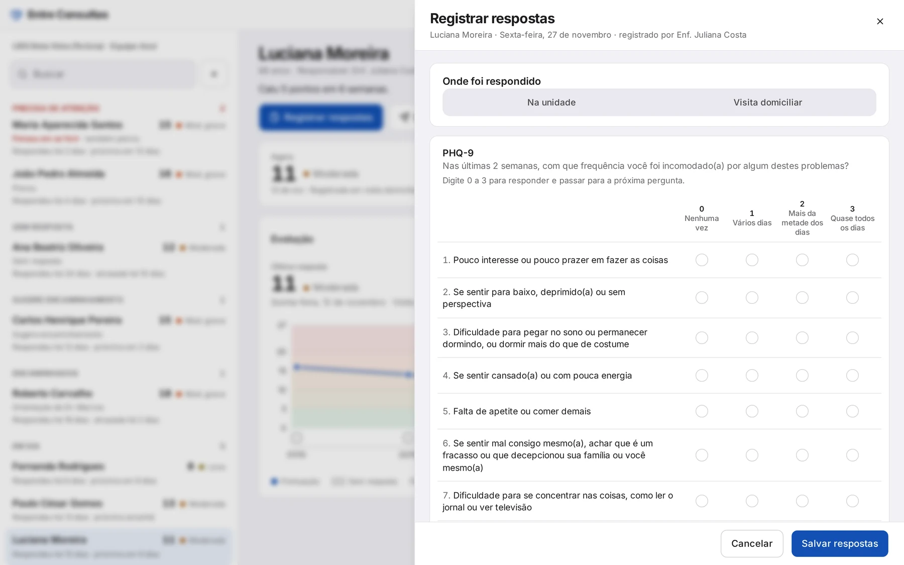
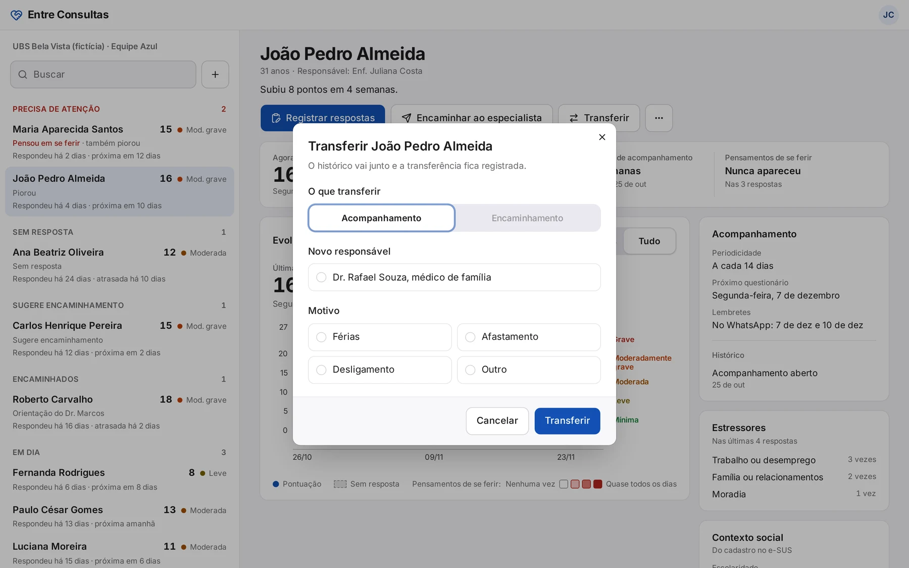
Encaminhamento
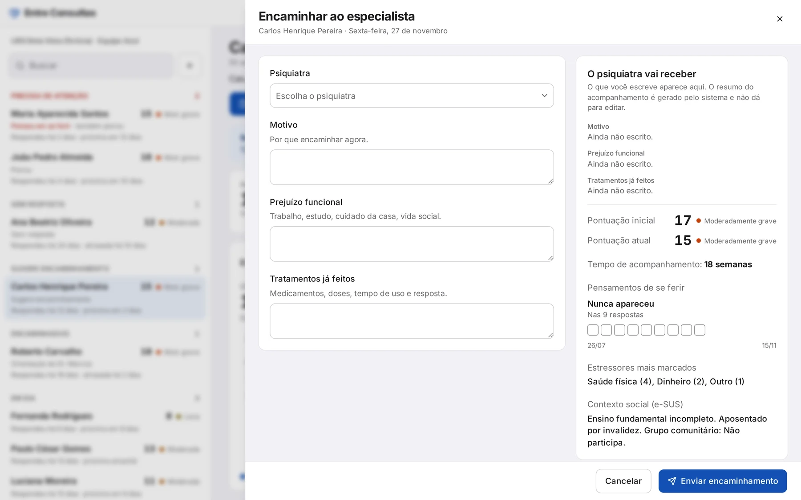
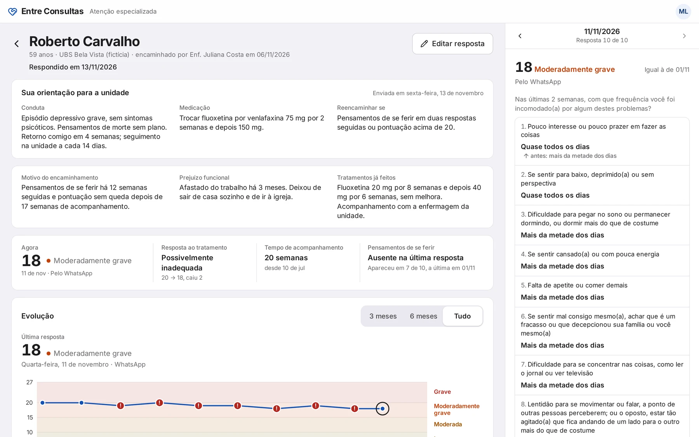
Contrarreferência
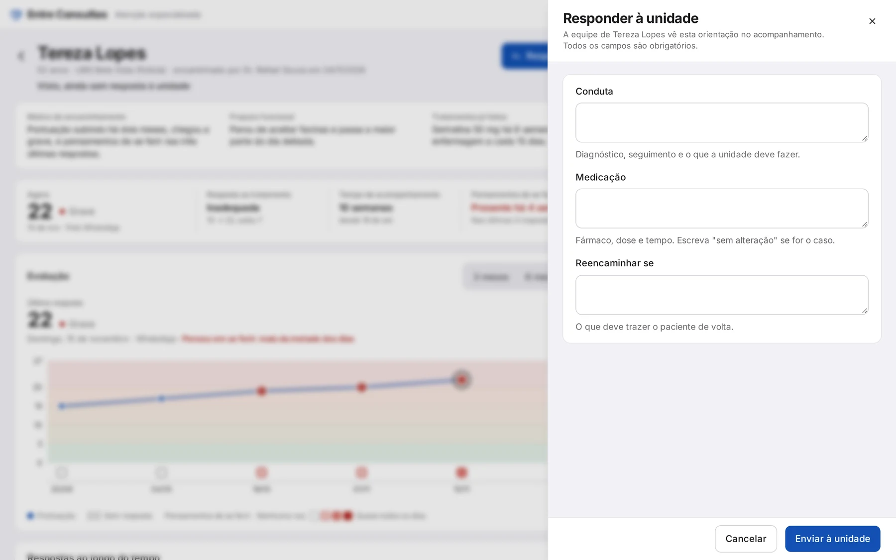
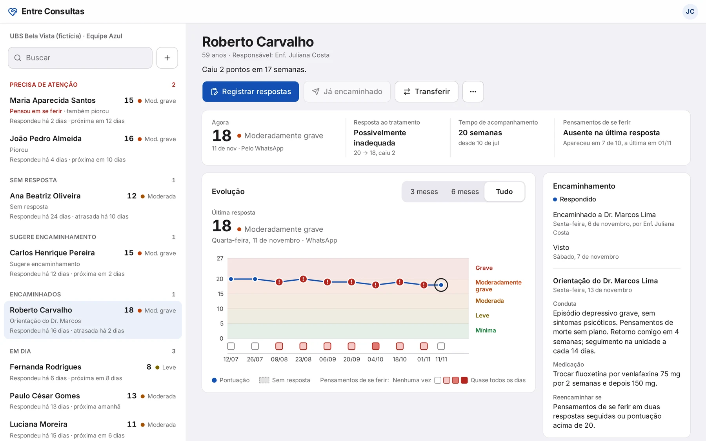
Demonstração
Dados fictícios, sem backend. A leitura do e-SUS é imitada.
No canto da tela, troca de perfil sem passar pelo gov.br.
Parte 05 de 05
Resultados, limitações e próximos passos
RRuan apresenta
Conclusões
Lista completa, com 11 referências, na documentação.
Obrigado!
Cuidado desde o primeiro contato, e também entre uma consulta e outra.
PedroRaphaelRuanViniciusVitor
Pelo WhatsApp, pelo site ou no posto
Quem piorou ou parou de responder
Junto com o encaminhamento